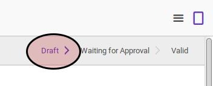
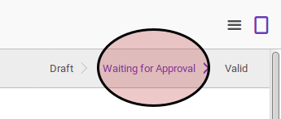
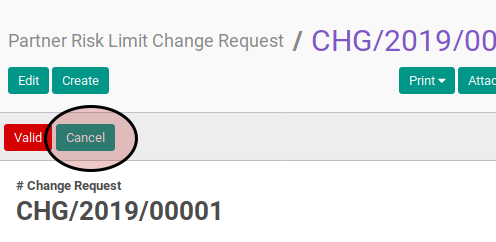
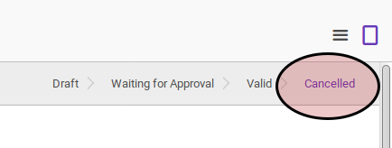

Membatalkan Risk Limit Change Request
A. INPUT
- Data risk limit change request yang akan dibatalkan harus memiliki status Draft, atau Waiting for Approval.


- User yang membatalkan harus memiliki akses untuk membatalkan risk limit change request.
B. INSTRUKSI KERJA
- Buka menu Partner -> Partner Risk -> Risk Limit Change Request. Abaikan jika sudah berada pada menu yang dimaksud.
- Buka data risk limit change request yang akan dibatalkan. Abaikan jika data sudah dibuka.
- Klik tombol Cancel pada bagian atas-kiri form.

C. OUTPUT
- Status risk limit change request akan berubah menjadi Cancelled.
